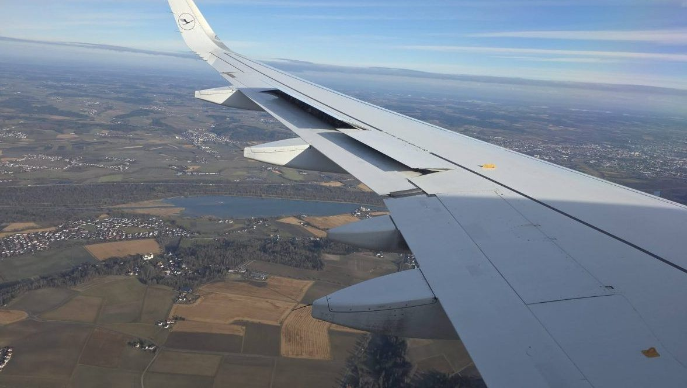
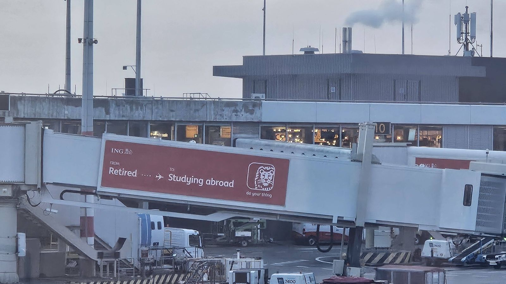
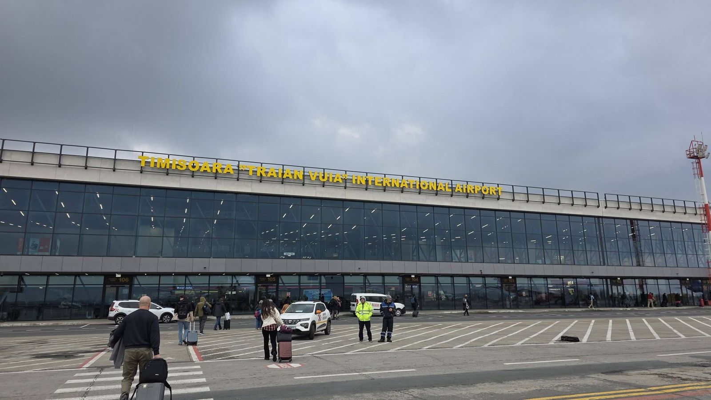
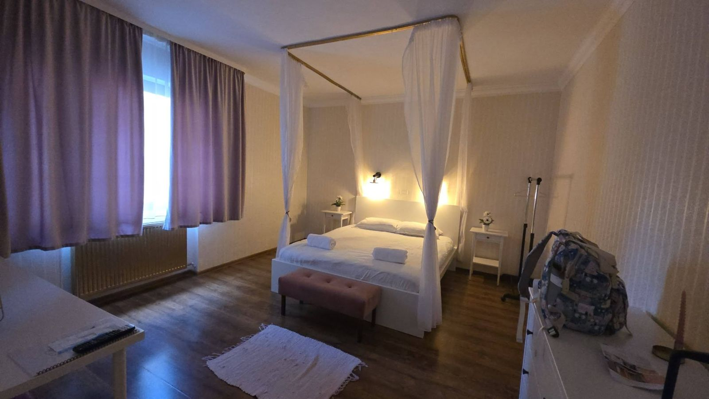
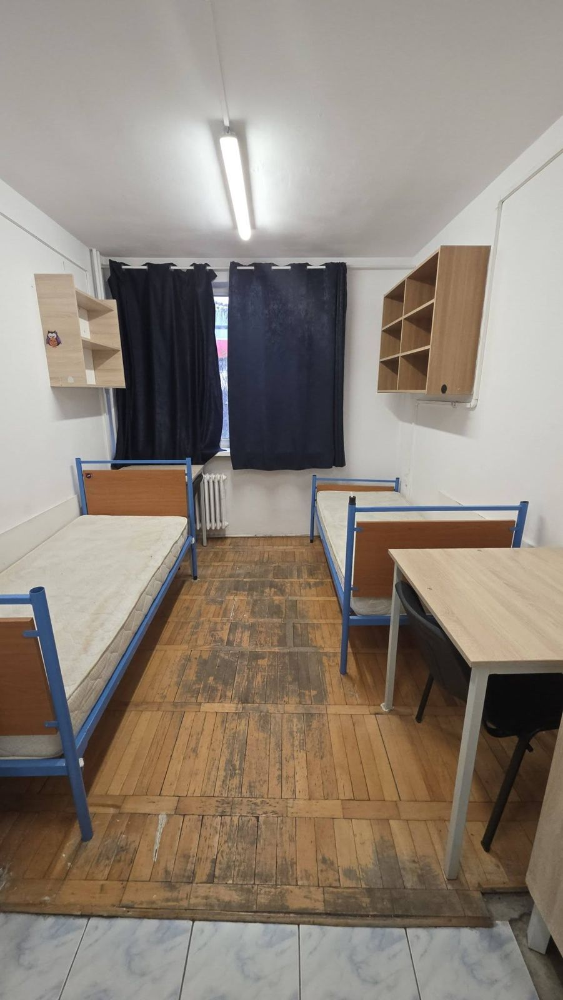
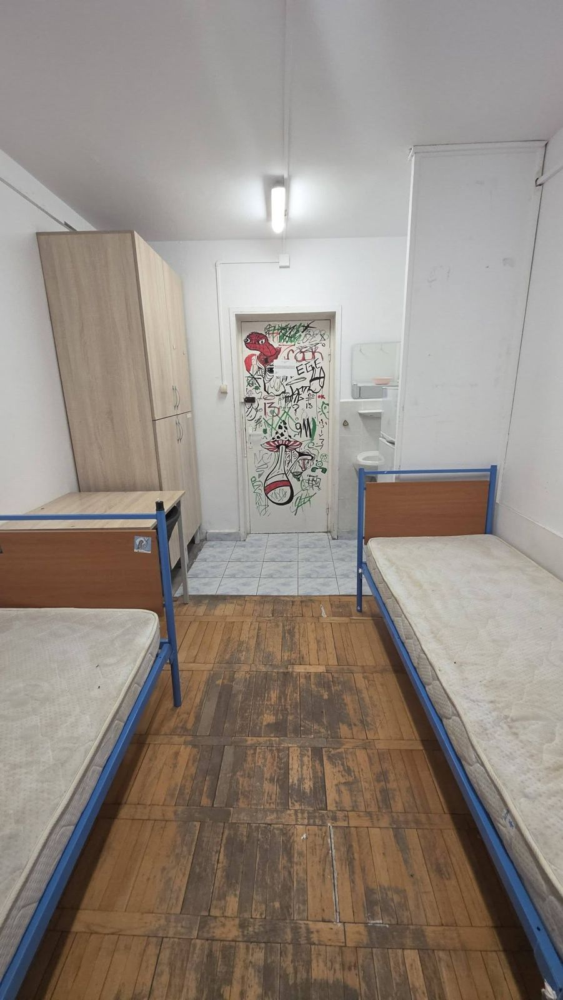
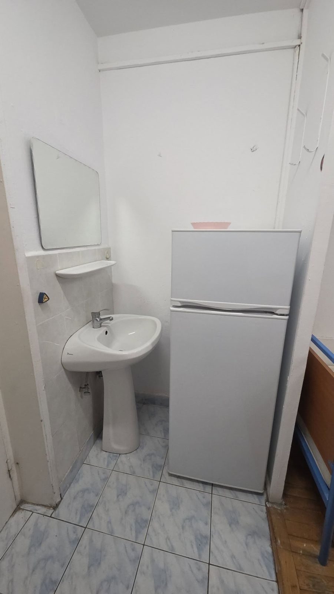

Journey 01 · Timișoara Note 3 of 11 Field Note
…and the Landing

Airport goodbyes are never easy, but the universe had a message for me, and it was about twenty feet tall and bright red:

Landing in Romania: finding my footing
That last leg of a trip and the final arrival has its own texture. Your body may be tired, but your senses wake up.
I landed in Romania with that travel-tired mix of adrenaline and fog. The practical part of my brain took over first: follow the signs, get the bags, figure out the next step. But even in that mode, I kept noticing small things: the cadence of a language I don’t yet speak (what’s up with that, duolingo?), the way people moved through space, the feeling of being new. Landing in Timisoara felt both familiar and not – it reminded me of my trips to Saipan years ago for work, the airport holding the same feeling of a small community ready to welcome you.

There’s a particular kind of humility that comes with arriving somewhere as an outsider, especially when there is a difference in language. It’s an awareness of just how challenging it can be to move around in a world you are not familiar with. It’s realizing how much of daily life depends on that invisible familiarity with words, systems, and norms. What side of the hall do you walk down? Which ATM machine should you use? Where are the elevators? How bad is your pronunciation that no one even knows you’re trying to say hello? (What’s up with THAT, Duolingo?) How much do you tip the taxi driver?
I am used to competence. I am not used to needing to double-check everything. But I am grateful for international data and google translate for getting me through these first few steps.
Getting to Timișoara and checking in
By the time I reached Timisoara, the experience stopped feeling like “international travel” and started feeling like “I am going to live here now.” That sentence still feels surreal to write. Driving from the airport to the student complex, I snapped blurry photos of murals and buildings, tried to figure out the flow of traffic as the taxi driver wove their way through.
That first night of arrival, too late to check in, I was grateful to the advice of Justine, the original Zag who came to Timisoara last spring for Erasmus+. She advised me to book a hotel the first few nights just in case, and I had found a cozy hideaway just a block from my dorm building. (Incidentally, this was also the name of the hotel – Cozy Hideaway).

The hotel room felt almost unreal in its calm serenity, especially after so many days of travel. Soft light. Curtains that actually curtain around the bed, as if I were a princess in a period drama. The room said “Welcome, princess… you are safe here… you can exhale… why dont you take a nice bath….” That first night of arrival, I fell into the bed at 5pm and did not open my eyes until 8am the next morning.
Time to check in
Checking into my dorm (C13) was one of those moments that would make everything real. A building. A room. A key. A place where my things will sit. A temporary home.



Listen. Listen.
I am a seasoned traveler, I have decades of experience in the military, and have my fair share of rolling with the unexpected. But, my first look at my new room was, in a word, shocking. Two narrow beds with metal frames. I’d be able to hold hands with my eventual roommate apparently. Bright overhead lighting. Bare walls. Floors that look like they’ve lived several lifetimes. A door covered in graffiti. It did not feel cozy. It did not feel settled. It did not make me feel like a princess. It was not a place my brain recognized as “home”, even temporarily.
The shock was very real, and it was not comforting.
I stood there with my bags – my whole life in 130-odd pounds I had just hauled up several flights of stairs because there are no elevators- and had a very distinct moment of, “Okay, so we’re doing this. We’re really doing this.”
Originally published at fieldnotesfromabroad.com/2026/02/24/and-the-landing/